Here are some line drwaings showing the types of dome frames I am producing. Note that hubs and other details (like doors, vents and pillows coverings) are not shown.
The minimum and maximum diameter values listed with each dome is twice the radial distance from a complete spherical dome's center of volume out to the dome's vertex. This means that a sphere having the indicated diameter will not fit inside the dome.
| TOP VIEW 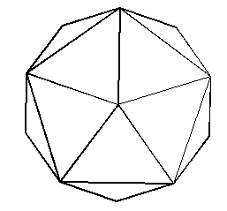 | SIDE VIEW 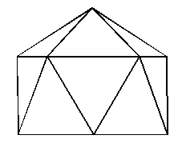 |
| Minimum diameter: 6.3 feet | Minimum height: 4.56 feet |
| Maximum diameter: 11.6 feet | Maximum height: 8.37 feet |
| TOP VIEW 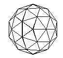 | SIDE VIEW 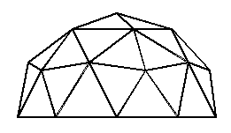 |
| Minimum diameter: 11.00 feet | Minimum height: 5.5 feet |
| Maximum diameter: 17.75 feet | Maximum height: 8.9 feet |
| TOP VIEW 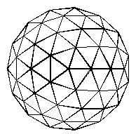 | SIDE VIEW 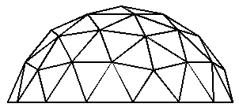 |
| Minimum diameter: 16.75 feet | Minimum height: 6.98 feet |
| Maximum diameter: 25.9 feet | Maximum height: 10.81 feet |
| TOP VIEW 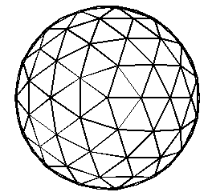 | SIDE VIEW 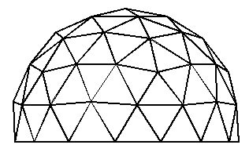 |
| Minimum diameter: 16.34 feet | Minimum height: 9.5 feet |
| Maximum diameter: 25.9 feet | Maximum height: 15.13 feet |
| TOP VIEW 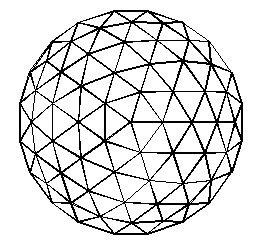 | SIDE VIEW 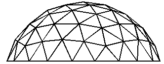 |
| Minimum diameter: 23.35 feet | Minimum height: 8.7 feet |
| Maximum diameter: 30.0 feet | Maximum height: 12.32 feet |
| TOP VIEW 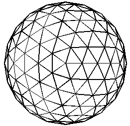 | SIDE VIEW 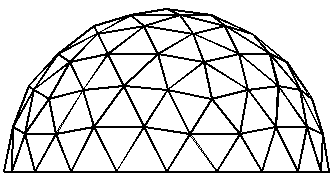 |
| Minimum diameter: 21.74 feet | Minimum height: 10.87 feet |
| Maximum diameter: 33.85 feet | Maximum height: 16.93 feet |
rwgray@rwgrayprojects.com